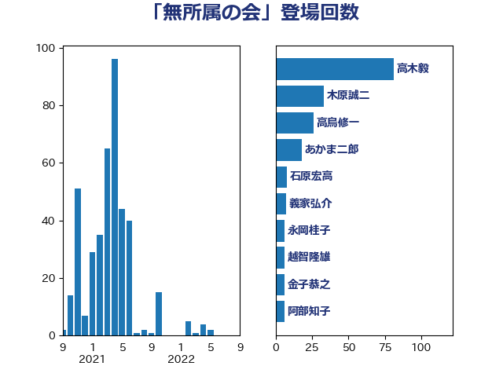

単語「無所属の会」

| 高木毅 | 自由民主党 | 81 回 |
| 木原誠二 | 自由民主党 | 33 回 |
| 高鳥修一 | 自由民主党 | 26 回 |
| あかま二郎 | 自由民主党 | 18 回 |
| 石原宏高 | 自由民主党 | 8 回 |
| 義家弘介 | 自由民主党 | 7 回 |
| 永岡桂子 | 自由民主党 | 6 回 |
| 越智隆雄 | 自由民主党 | 6 回 |
| 金子恭之 | 自由民主党 | 6 回 |
| 阿部知子 | 立憲民主党 | 6 回 |
| 橋本岳 | 自由民主党 | 5 回 |
| 畦元将吾 | 自由民主党 | 5 回 |
| 藤田文武 | 日本維新の会 | 5 回 |
| 山田賢司 | 自由民主党 | 4 回 |
| 岡本あき子 | 立憲民主党 | 3 回 |
| 藤原崇 | 自由民主党 | 3 回 |
| 古川元久 | 国民民主党 | 2 回 |
| 吉田はるみ | 立憲民主党 | 2 回 |
| 牧原秀樹 | 自由民主党 | 2 回 |
| 逢沢一郎 | 自由民主党 | 2 回 |
| 金田勝年 | 自由民主党 | 2 回 |
| 下村博文 | 自由民主党 | 1 回 |
| 中山展宏 | 自由民主党 | 1 回 |
| 中根一幸 | 自由民主党 | 1 回 |
| 中谷真一 | 自由民主党 | 1 回 |
| 二階俊博 | 自由民主党 | 1 回 |
| 伊東良孝 | 自由民主党 | 1 回 |
| 冨樫博之 | 自由民主党 | 1 回 |
| 務台俊介 | 自由民主党 | 1 回 |
| 古屋範子 | 公明党 | 1 回 |
| 吉田宣弘 | 公明党 | 1 回 |
| 小林鷹之 | 自由民主党 | 1 回 |
| 小沼巧 | 立憲民主党 | 1 回 |
| 岡本三成 | 公明党 | 1 回 |
| 島尻安伊子 | 自由民主党 | 1 回 |
| 平将明 | 自由民主党 | 1 回 |
| 末松義規 | 立憲民主党 | 1 回 |
| 柴山昌彦 | 自由民主党 | 1 回 |
| 櫻井周 | 立憲民主党 | 1 回 |
| 武井俊輔 | 自由民主党 | 1 回 |
| 浦野靖人 | 日本維新の会 | 1 回 |
| 海江田万里 | 立憲民主党 | 1 回 |
| 甘利明 | 自由民主党 | 1 回 |
| 神田憲次 | 自由民主党 | 1 回 |
| 福田達夫 | 自由民主党 | 1 回 |
| 米山隆一 | 立憲民主党 | 1 回 |
| 細田健一 | 自由民主党 | 1 回 |
| 美延映夫 | 日本維新の会 | 1 回 |
| 近藤和也 | 立憲民主党 | 1 回 |
| 野田聖子 | 自由民主党 | 1 回 |
| 金子恵美 | 立憲民主党 | 1 回 |
| 鈴木淳司 | 自由民主党 | 1 回 |
| 鬼木誠 | 立憲民主党 | 1 回 |